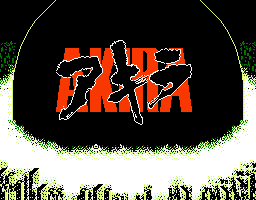

Akira - Nintendo Games
Table of Contents
|
Nintendo Games
Akira

Genre:
RPG
Seems to follow the anime very closely. Starts out in the police department after Tetsuo runs into the blue-skinned child. No other information available.
Anime Video Game Resource Center © 1998 by
Luis A. Cruz